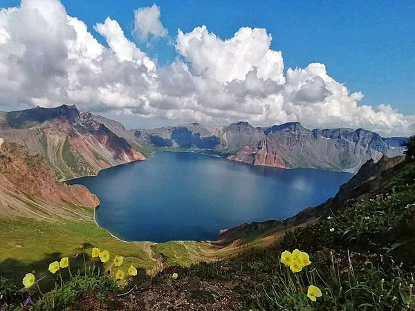

<!DOCTYPE html>
<html lang="en">
<head>
    <meta charset="UTF-8">
    <meta http-equiv="X-UA-Compatible" content="IE=edge">
    <meta name="viewport" content="width=device-width, initial-scale=1.0">
    <title>애국가</title>
</head>
<body>
    
</body>

<h1>애국가</h1>
<h2>1절</h2>

<section> 
    <article>동해물과 백두산이 마르고 닳도록<br></article> 
    <article>하느님이 보우하사 우리나라 만세<br></article>
    <article>무궁화 삼천리 화려 강산<br></article>
    <article> 대한 사람 대한으로 길이 보전하세<br></article>
</section> 

<figure> </figure>


<h2>2절</h2>

<section>
    <article>남산 위에 저 소나무 철갑을 두른 듯<br></article>
<article>바람 서리 불변함은 우리 기상일세<br></article>
<article>무궁화 삼천리 화려 강산<br></article>
<article>대한 사람 대한으로 길이 보전하세<br></article> 
</section>

<figure> </figure>


<h2>3절</h2>
<section>
    <article>가을 하늘 공활한데 높고 구름 없이<br></article>
<article>밝은 달은 우리 가슴 일편단심일세<br></article>
<article>무궁화 삼천리 화려 강산<br></article>
<article>대한 사람 대한으로 길이 보전하세<br></article> 
</section> 

<figure></figure>

<h2>4절</h2>

<section>
    <article>이 기상과 이 맘으로 충성을 다하여<br></article>
<article>괴로우나 즐거우나 나라 사랑하세<br></article>
<article>무궁화 삼천리 화려 강산<br></article>
<article>대한 사람 대한으로 길이 보전하세<br></article>
</section>


<figure></figure>


<h2><a href="https://youtu.be/N3cPl0uZTh4"> 애국가 노래 재생 바로가기</a> </h2>


</html>